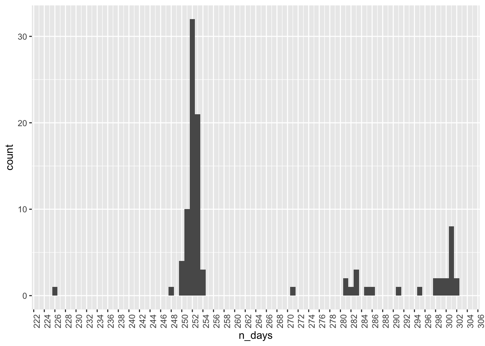
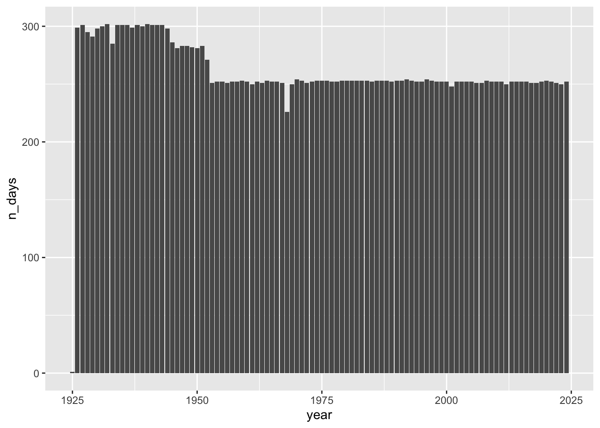
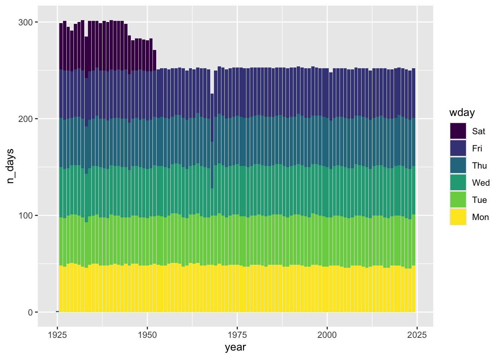
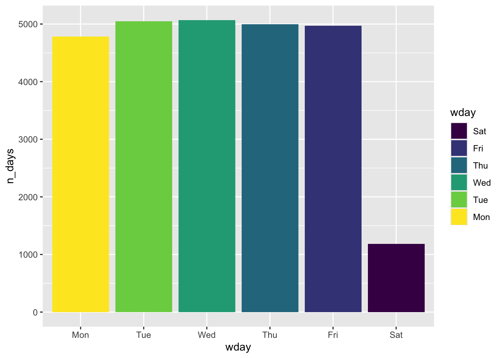
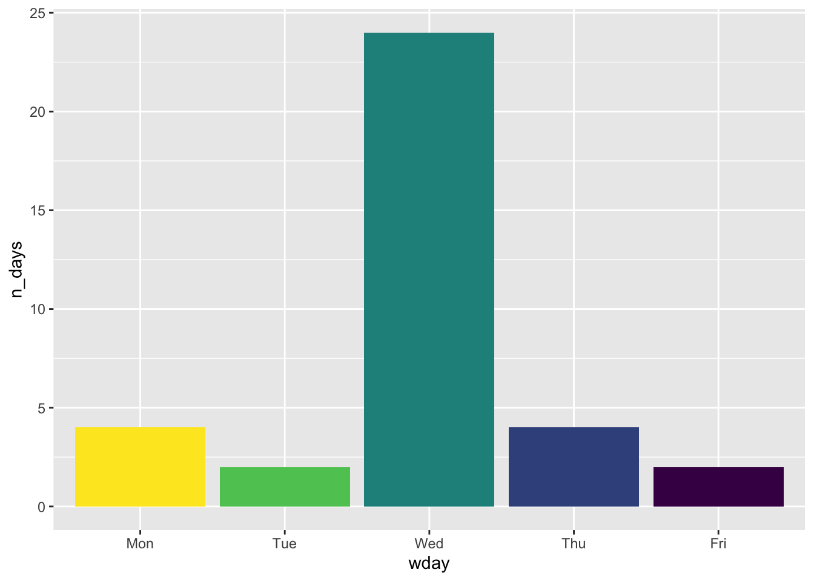

| year | n_days |
|---|---|
| 1925 | 1 |
| 1968 | 226 |
| 2001 | 248 |
| 1961 | 250 |
| 1969 | 250 |
Trading days per year (crsp.dsf)
The conventional notion is that there are (on average) about 252 trading days per year on US stock exchanges. We don’t have to accept this, as we can use data on CRSP’s daily stock file (crsp.dsf) to count trading dates per year.
In this note, we examine the number of trading days in each year using date from crsp.dsf. To start, we calculate n_days, the number of trading days in that year, for each year.
From Table 1, we see that 1925 is clearly an odd year (and we will exclude it from subsequent analysis). Also, 1968 is an outlier.
From Table 2, it can be seen that there is a cluster of years with between 251 and 253 trading days.
| n_days | n |
|---|---|
| 250 | 4 |
| 251 | 10 |
| 252 | 32 |
| 253 | 21 |
| 254 | 3 |
But, looking at Figure 1, we can see an unexpected cluster of years with more than 280 trading days.

In Figure 2, we see that the years with an unexpectedly high number of trading days are in the earlier part of the sample.

From Figure 4 we learn that some trading days are actually Saturdays. We can do a version of Figure 2 that includes information about the days of the week. As we can see in Figure 3, the Saturdays are in the earlier part of the sample. It also seems that the “issue” with 1968 is concentrated in Wednesdays.

According to tradinghours.com, “in May 1887, the trading hours were officially set to Monday to Friday 10am to 3pm and Saturday from 10am to noon. … In [September] 1952, the Saturday trading session was finally retired.”

We can identify “missing” dates in 1968 by doing an anti_join() of a table of non-weekend dates with the list of trading dates.1 It turns out that a crisis in managing trading volumes known as the “paperwork crisis” forced the NYSE to restrict trading to four days a week. According to Market Memoir, “for months the exchange closed on Wednesdays, and sometimes needed to close early on other days to give firms additional time to combat severe backlogs.” The missing Wednesdays are quite apparent in Figure 5.

Footnotes
Note that some of these “missing” dates would be public holidays.↩︎